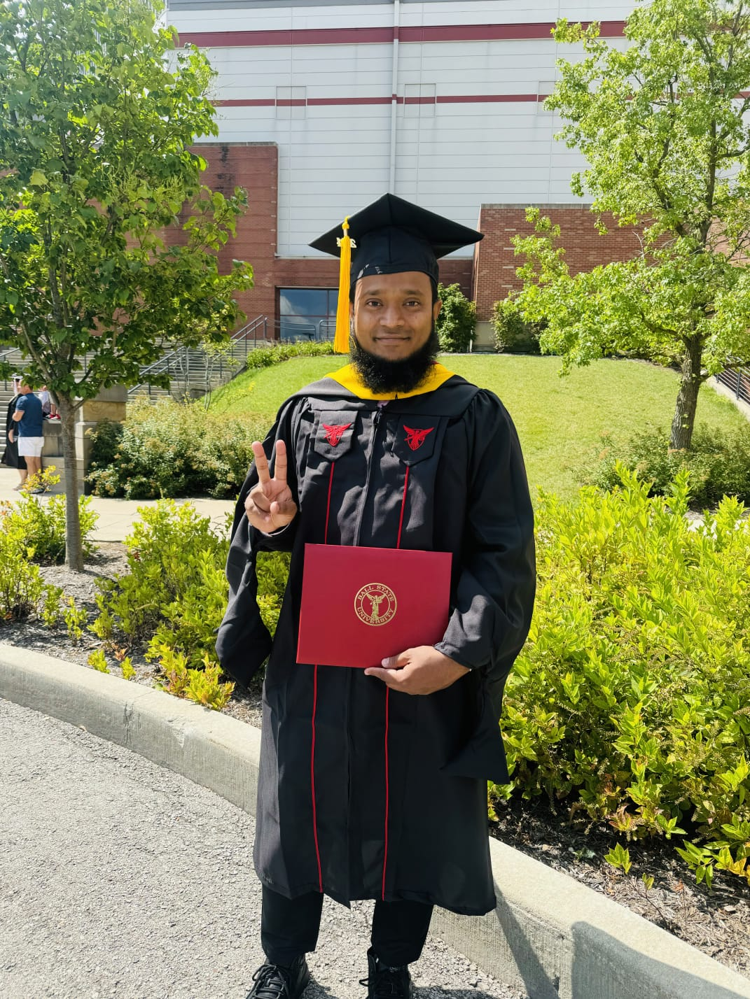
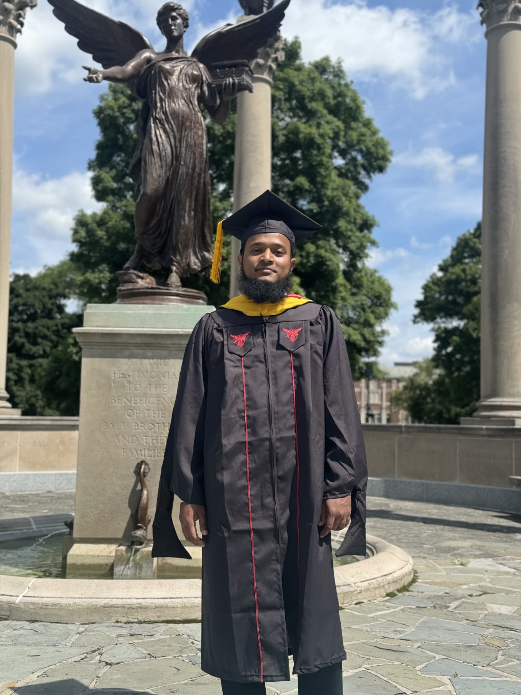
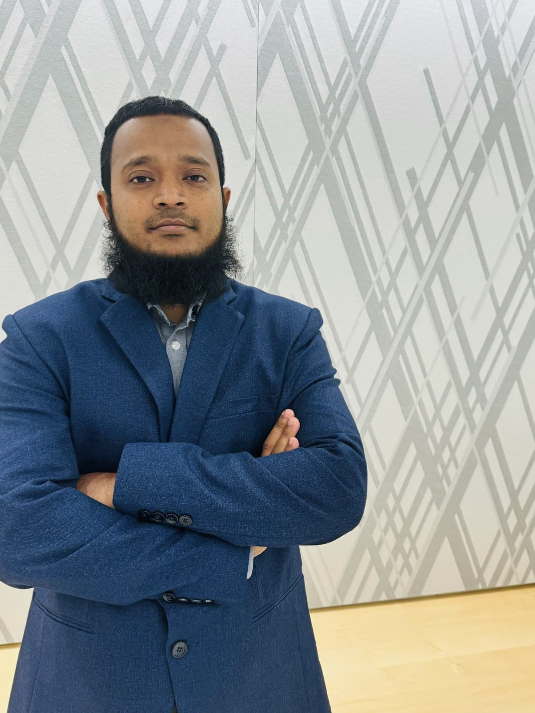
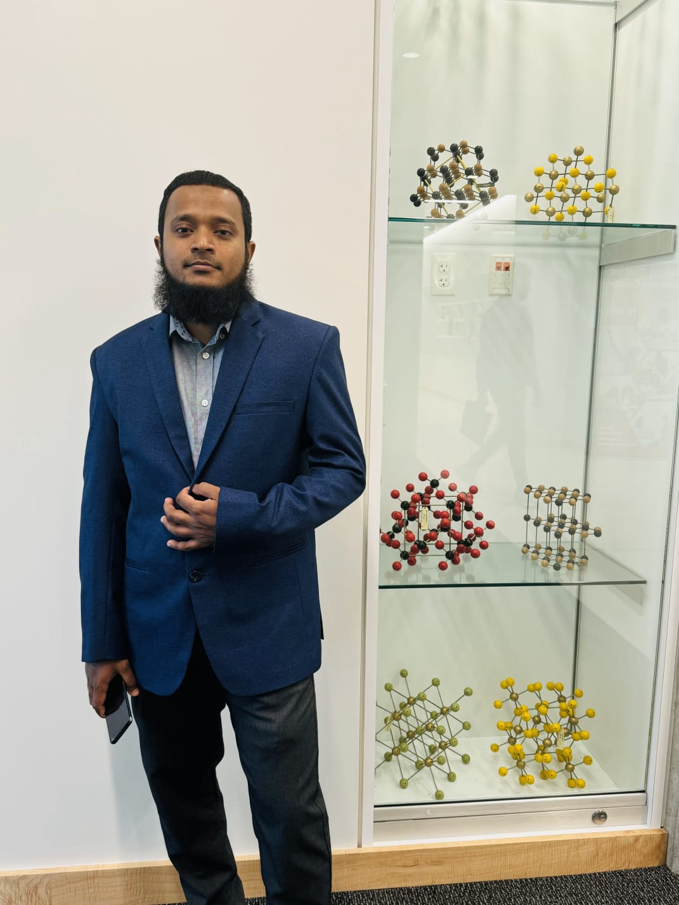
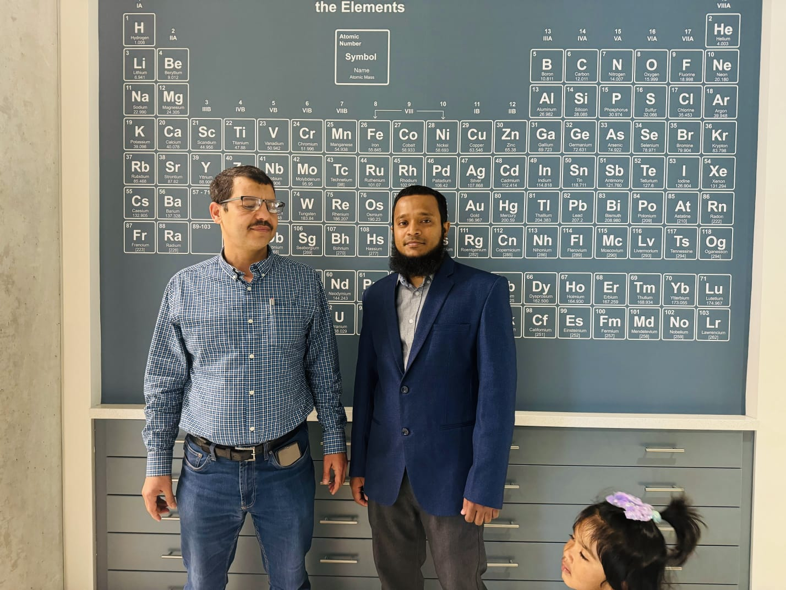
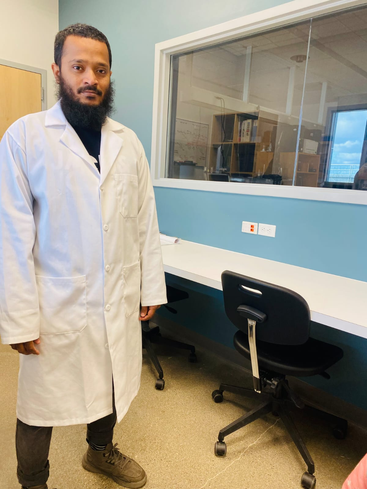
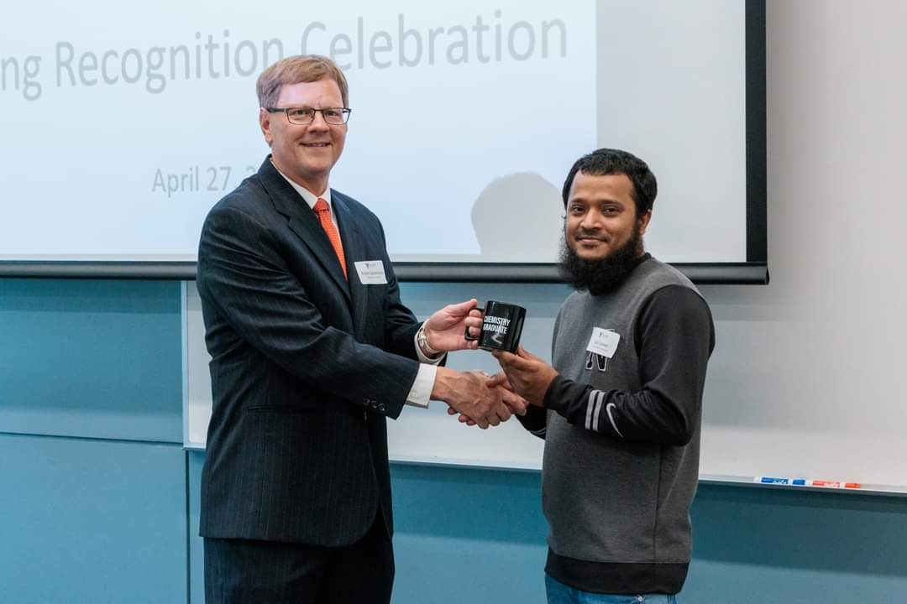
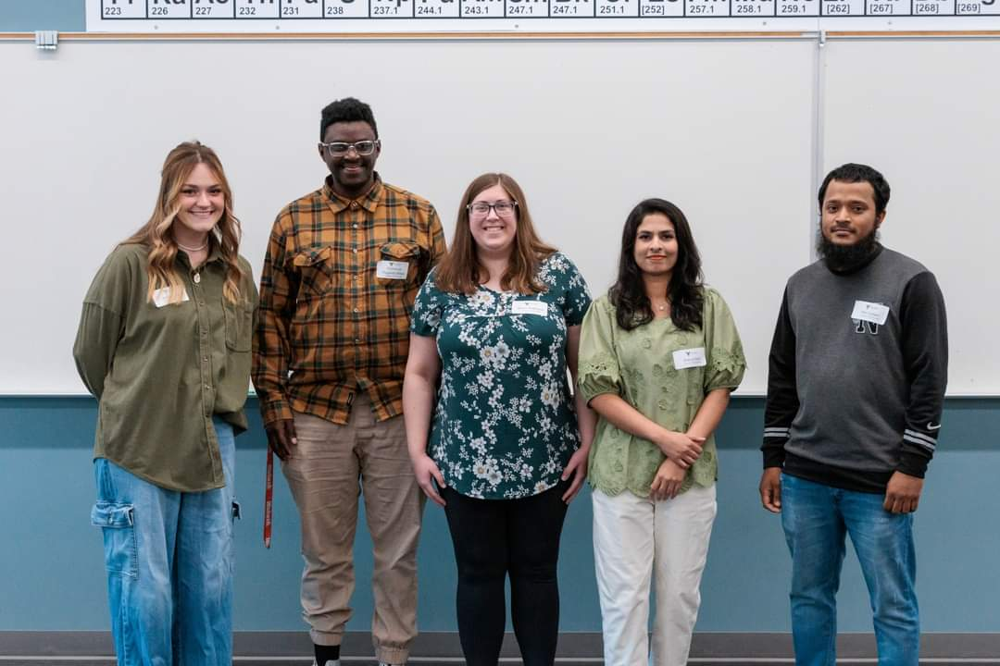
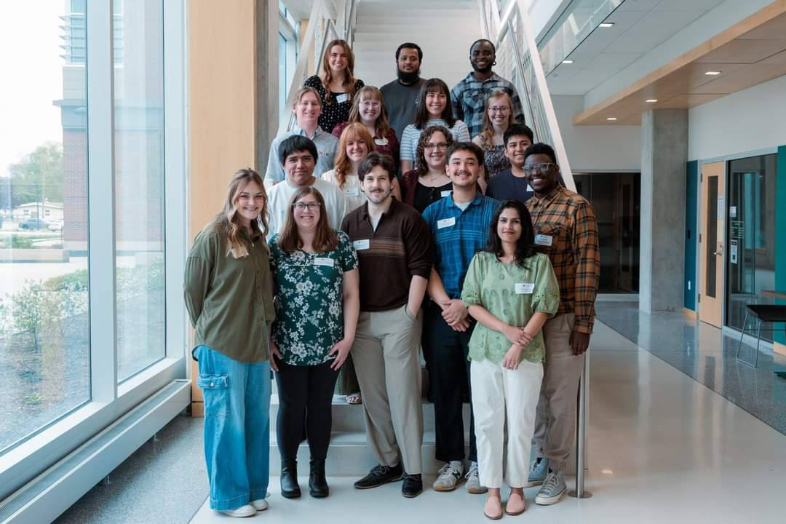

01
Supramolecular Self-Assembly
Understanding how hydrogen bonding and other non-covalent interactions direct the organization of macrocycles into higher-order supramolecular structures.
I’m Kazi Md Zubaer, a Graduate Research Assistant exploring supramolecular chemistry, molecular self-assembly, and the principles that turn molecular interactions into functional systems.
I am a Graduate Research Assistant at the University of South Carolina with a research focus in supramolecular chemistry. My work is centered on understanding how non-covalent interactions can direct molecular organization and produce complex, responsive structures.
This website will grow with my research, bringing together current projects, publications, presentations, and academic milestones.
My interests span supramolecular chemistry, molecular self-assembly, and the design of functional small molecules at the chemistry–biology interface.
Understanding how hydrogen bonding and other non-covalent interactions direct the organization of macrocycles into higher-order supramolecular structures.
Studying the assembly of terphenyl bis-urea macrocycles and developing molecular strategies, including chain stoppers, to regulate supramolecular growth and assembly behavior.
Designing and synthesizing functionalized small molecules for molecular recognition and biological targeting, including LY6K-directed compounds relevant to triple-negative breast cancer research.
My current research spans supramolecular self-assembly and small-molecule development at the interface of chemistry and biology.
Investigating the supramolecular assembly and polymerization of terphenyl bis-urea macrocycles, with particular emphasis on following the assembly process in the presence of molecular chain stoppers and understanding how these additives influence assembly growth and behavior.
Developing and synthesizing functionalized small-molecule derivatives targeting LY6K, a protein associated with triple-negative breast cancer (TNBC). The project builds on the LY6K-binding scaffold NSC243928, with an emphasis on designing new molecular derivatives that retain target recognition while incorporating functional groups for studying and potentially advancing targeted therapeutic strategies.
Selected peer-reviewed research in supramolecular chemistry, molecular assembly, and functional macrocycles.
From organic and materials chemistry to supramolecular self-assembly, my academic and professional experience spans research, teaching, and pharmaceutical analysis.
Investigating macrocycle-based supramolecular assembly and polymerization, hydrogen-bond-driven self-assembly, host–guest interactions, and strategies for controlling assembly length.
Research on bismuth-based metal–organic frameworks and BiVO₄ heterojunctions for degradation of persistent organic pollutants.
Chemical investigation of Corchorus olitorius L. leaves using extraction, chromatography, and instrumental analysis.
Phytochemical investigation using extraction, TLC, column chromatography, UV–Vis, IR, and HPLC.
Instructed CHEM 101, CHEM 111, and CHEM 112 laboratory sections and supported tutoring, proctoring, and grading.
Designed and delivered chemistry instruction, laboratory demonstrations, assessments, and safety training.
Analyzed pharmaceutical products and raw materials, maintained analytical instruments, and contributed to analytical methodology development.
Performed quality-control testing of pharmaceutical raw materials and finished products and maintained SOP-based analytical documentation.
Supported organizational programs, educational outreach, community service, and problem-solving initiatives.
Moments from my academic journey, research life, milestones, and the people who made them memorable.









For research conversations, collaborations, or academic inquiries, feel free to get in touch.